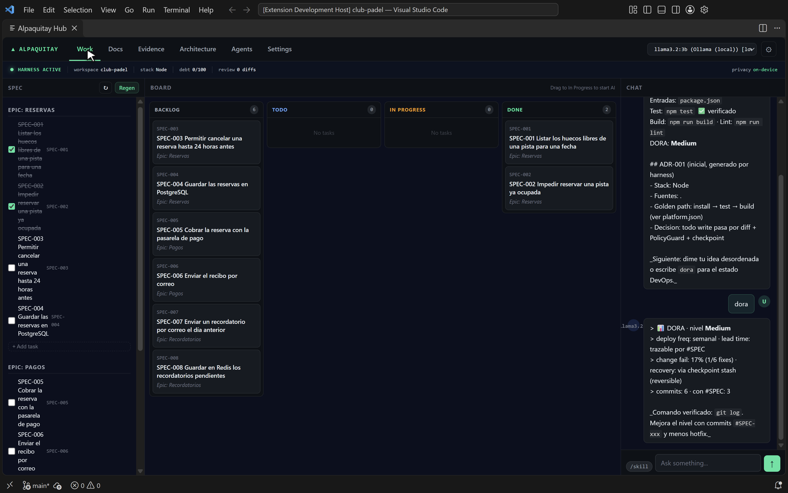
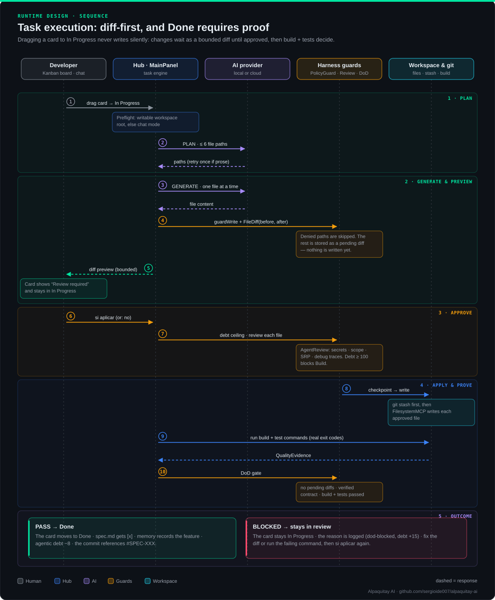

Capítulo 04
Work: especificación, tablero y chat
La pestaña Work es donde se hace el trabajo de código. Tiene tres paneles: la especificación (spec.md), el tablero Kanban que se deriva de ella y el chat con el arnés. Es el flujo SDD (spec-driven development) de Alpaquitay: primero se acuerda qué, después se implementa tarea a tarea y cada cambio queda enlazado a un requisito.


spec.md ──► Tablero ──► la IA implementa una tarea ──► diff ──► si aplicar ──► spec.md [x] ──► commit #SPEC-001
▲ │
└──────────────────────────────────── ciclo de retroalimentación ─────────────────────────────┘
Tu siguiente paso, siempre a la vista
Debajo de las pestañas, la barra de siguiente paso sigue el flujo SDD, Spec → Build → Review → Verify, y muestra un botón principal con lo que toca hacer ahora:
| Dónde estás | Qué dice la barra | El botón |
|---|---|---|
Aún no hay spec.md |
Start with a spec | Create spec with AI |
| Hay tareas pendientes | Next task: … | Start SPEC-00x (prioriza en Todo e inicia el trabajo en In Progress) |
| La IA está trabajando | AI is building … | Watch progress |
| Hay diffs pendientes | Review N pending changes | Review changes y Apply & run gates |
| La deuda llegó al tope | Build is blocked by technical debt | See debt |
| Todas las tareas hechas | All N tasks are done | Validate against spec |
Cada tarjeta de Backlog, Todo e In Progress tiene además un botón Start (o Resume), así que arrastrar es opcional. Sobre el campo del chat, los botones rápidos ejecutan Build next task, Validate, Tests y Refactor; cuando hay diffs pendientes aparecen Review and apply y Discard changes.
| Atajo | Acción |
|---|---|
| Ctrl+K (Cmd+K en macOS) | Abre la paleta de comandos: cada pestaña, acción y agente, con búsqueda |
| Alt+1 a 7 (Option en macOS) | Cambia de pestaña |
| / | Enfoca el chat |
1. La especificación (spec.md)
spec.md es Markdown normal en la raíz de tu proyecto, y es la base de datos del tablero: el estado de las tarjetas se lee de este archivo, no se guarda aparte. Así que lo puedes editar a mano, revisarlo en un pull request y versionarlo como cualquier otro archivo.
# Portal de reservas del club
Reservas de pistas con pago online y recordatorios por correo.
## Epic: Reservas
- [ ] SPEC-001 Crear el calendario de pistas disponibles
- [ ] SPEC-002 Permitir reservar una pista para una hora
- [x] SPEC-003 Diseñar el modelo de datos de reservas
## Epic: Pagos
- [ ] SPEC-004 Cobrar la reserva con la pasarela de pago
- [ ] SPEC-005 Enviar el recibo por correo
Reglas del formato:
# Títuloy un párrafo de contexto al principio.- Cada
## Epic: …(o cualquier encabezado de nivel 2) agrupa tareas. - [ ] textoes una tarea pendiente;- [x] textouna terminada.- Los identificadores
SPEC-001,SPEC-002… se asignan por posición. - El texto libre entre tareas se usa como contexto para la IA.
¿Tu proyecto usa otro nombre, como tasks.md o backlog.md? Cámbialo en Settings → Workspace → Spec file (alpaquitay-ai.specFile). Si el archivo no existe, Alpaquitay busca otros parecidos.
Tres formas de crearla
| Forma | Cuándo | Dónde |
|---|---|---|
| + Create with AI / Regen | Tienes un proveedor configurado y quieres que la IA analice el workspace. Regen admite una descripción opcional del proyecto. | Panel Spec del Hub. |
| Generate Specification (Local Model) | Quieres que tu descripción no salga del equipo. Escribe specs/<nombre>.md y nunca sobrescribe. |
Paleta de comandos o Ctrl+Shift+A. Ver Motor local. |
| A mano | Ya sabes lo que quieres. | Cualquier editor. Pulsa ↻ en el panel Spec para recargar. |
2. El tablero
Todas las tareas pendientes empiezan en Backlog. El flujo habitual es Backlog → Todo → In Progress → Done: mueve a Todo para priorizar y pulsa Start para comenzar. La revisión ocurre dentro de In Progress; no es una quinta columna.
vite instalado), así que la compuerta DoD conserva la tarjeta en In Progress y muestra qué falta. Grabado con Ollama (llama3.2 3B), acelerado en las esperas.Al iniciar una tarjeta desde Todo (o moverla a In Progress) arranca la IA, y no escribe nada a ciegas:
- Plan. El agente revisa el workspace y decide qué archivos crear o cambiar (como mucho 6). Las rutas que saldrían del proyecto se descartan; una ruta que el modelo escriba como
/api/x.jsse lee comoapi/x.jsdentro del proyecto. - Generación. Genera cada archivo y lo guarda como diff pendiente. El chat muestra cada diff (
+añadidas/−quitadas). - Tu revisión. Lee los diffs. Usa
diff <ruta>para ver uno completo. - Revisar y aplicar o descartar. Usa Review and apply para procesar los cambios con la política, la revisión automática y el checkpoint descritos en Cómo piensa el arnés, o Discard changes para descartarlos. También puedes usar los comandos
si aplicarynoen el chat. - Verificación. Tras aplicar se ejecutan los comandos reales de build y test.
- Done. La tarjeta pasa a Done y
spec.mdse actualiza a- [x]solo si la compuerta DoD tiene evidencia. Si no, se queda en In Progress y el chat explica qué falta.
Si una tarea antigua contiene una ruta de ejemplo como <carpeta-fuente>/services/validator.ts, el arnés la resuelve usando la carpeta fuente detectada (o la raíz del workspace), actualiza la vista previa en la ruta real y pide confirmación otra vez. Si el archivo cambió desde que se generó el diff, no lo sobrescribe: conserva esa propuesta para regenerarla. Un diff que falla queda pendiente, pero los demás se siguen procesando. Si no hay repositorio Git, la aplicación continúa con un aviso de que no se pudo crear el checkpoint.


La pestaña Evidence muestra la misma cola de revisión con botones (Discard all y Apply & run gates). Review es un estado de la tarea mientras permanece en In Progress, no una columna adicional.
Si la llamada al modelo falla, el error aparece en el chat y la tarjeta vuelve a su columna: no hay fallos silenciosos.
3. El chat
El chat del panel derecho entiende tres tipos de mensaje:
- Lenguaje natural. El arnés decide el carril (Flash, Build o Deep), te enseña su decisión y, si hace falta, te pide confirmación. Ver Cómo piensa el arnés.
- Comandos del arnés, como
onboard,dora,deudaosi aplicar. La mayoría no gastan llamadas a modelos. Están todos en Comandos del chat. - Skills, con el botón /skill: crear un archivo, refactorizar, generar tests, el standup diario… Ver Agentes.
Ideas que todavía no son tareas
Escribe una idea desordenada («se me ocurre que los socios podrían reservar con prioridad…»). El arnés la detecta como carril Flash · ideate y la guarda en la bandeja de ideas (.alpaquitay/ideas.json) con un objetivo, un alcance y un no-alcance propuestos. Cuando la tengas clara, escribe promover y la última idea se convierte en una épica nueva de spec.md.
Enlazar commits con tareas
Menciona la tarea en el mensaje del commit:
feat(reservas): calendario de pistas disponibles #SPEC-001
Muestra las franjas libres de los próximos 7 días.
Se reconocen #SPEC-001 y [SPEC: 001]. La pestaña Evidence marca esos commits en el historial y los cuenta en las señales del repositorio: cuantos más commits enlazados, mejor trazabilidad.
Generate from Spec y Validate Against Spec
Además del tablero, el menú rápido tiene dos comandos clásicos que trabajan con cualquier archivo de especificación (.md, .yaml, .yml, .json o .feature):
- Generate from Spec elige un archivo, planifica los archivos necesarios y los genera.
- Validate Against Spec compara el código del proyecto con la especificación y te informa de lo que no cumple.
New Specification crea una plantilla en specs/: API REST (OpenAPI 3.0), feature BDD (Gherkin), esquema de base de datos, microservicio Spring Boot o componente React.